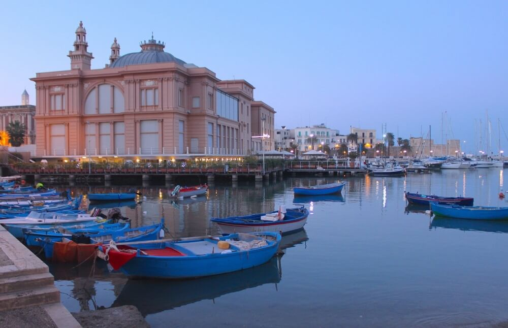
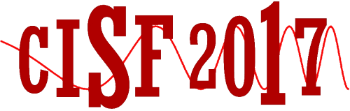

La terza edizione della CISF è aperta a tutti gli Studenti dei corsi di laurea Triennale e Magistrale e dei corsi di Dottorato di ricerca che siano regolarmente iscritti all'AISF per l'anno 2017.
Le attività della conferenza si svolgeranno nei giorni 11-13 Maggio 2017. Domenica 14 maggio sarà una giornata extra da dedicare a una gita in spiaggia (se le condizioni meteo ce lo consentiranno) o in altra località pugliese. Se vuoi partecipare alle attività di Domenica, indicalo nel modulo di iscrizione per prenotare una notte extra in alloggio.
A Bari, presso il Dipartimento Interateneo di Fisica “Michelangelo Merlin”. Durante la Conferenza sarà possibile inoltre visitare l’azienda SITAEL, specializzata nel settore aerospaziale, il DataCenter RECAS, e alcuni laboratori del nostro Dipartimento.